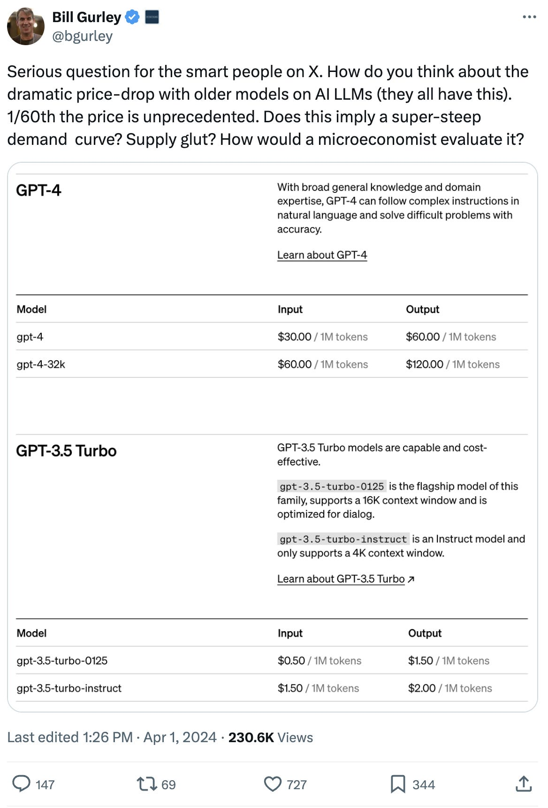
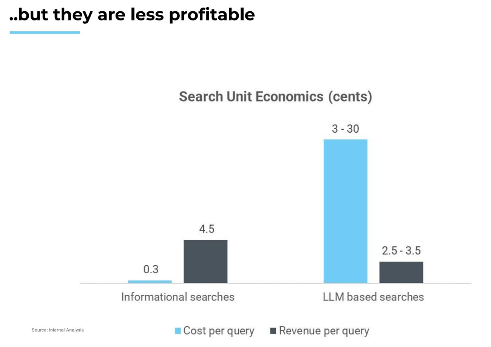
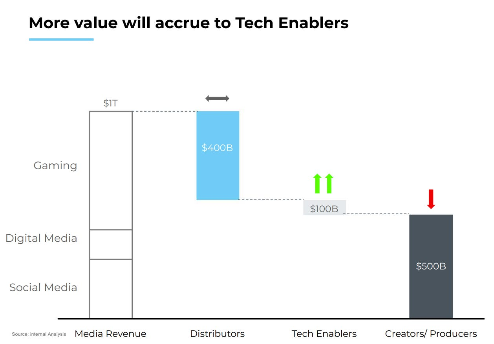

#1 目前为止，生成式AI的价值流向了哪里？
自"AI 的 iPhone 时刻"以来已过去 18 个月1，但发展的步伐从未放缓。我一直在思考的最大问题之一是：生成式AI 的价值——无论是今天还是未来——究竟在哪里累积。
如今，生成式AI 的堆栈呈现出 A 形，而非云计算的 V 形2：

我将堆栈分为三个层次——半导体、基础设施和应用。以下是生成式AI 收入的汇总：
半导体：英伟达在最近一个财报季度（截至 2024 年 1 月）的数据中心收入约为 180 亿美元。鉴于其 95% 以上的市场份额，我们估算该层的年化收入约为 750 亿美元。
基础设施：该层包括超大规模云服务商（AWS、GCP、Azure）以及主要的推理云（CoreWeave、Lambda 等）。保守估计该层的年化收入约为 100 亿美元。
应用：大语言模型（OpenAI、Anthropic、xAI 等）、图像模型（Midjourney 等）及其他纯生成式AI 应用。部分生成式AI 用例的收入可能被计入"软件"收入范畴，因此我暂且慷慨地估计该层年化收入约为 50 亿美元。
相比之下，云经济呈现更为"直观"的价值分布——越接近终端客户的应用层，攫取的价值越多。
核心结论：在当今生成式AI 堆栈中，半导体层已占据约 83% 的收入（900 亿美元中的 750 亿美元）。这远高于半导体在当今云堆栈中约 10% 的份额！
#2 目前为止，生成式AI的利润流向了哪里？
盈利能力的堆栈同样呈倒置形态，半导体层今天攫取了最高份额3：

以下是具体数据：
应用层：据估算，Anthropic 的毛利率约为 50—55%。我假设该层整体保持相同水平。
基础设施层：我估计基础设施玩家的毛利率约为 65%（未含 GPU 折旧）。若计入折旧，该数字降至 25—30%。
半导体层：据估算，英伟达在其生成式AI 数据中心产品上的毛利率高达 85% 以上。
云堆栈的盈利能力已有充分研究，唯独超大规模云服务商的毛利率是个例外。Azure 的毛利率据估算约为 63%，我们假设该层的基础设施均为这一水平。
综合来看，毛利润高度集中于半导体层——在 730 亿美元总毛利润中攫取了 640 亿美元。下图直观展示了这一分布（收入 × 毛利率 %）：

值得用柱状图来直观感受这一惊人的相对比例。把 100% 设为系统中所有毛利润的总和。

核心结论：半导体层已占据生成式AI 生态系统约 88% 的毛利润（相比之下，云堆栈中的半导体仅占 5%）。
#3 未来将走向何方？
我们正处于平台转移的早期阶段，半导体攫取了绝大部分价值。我不认为当前生成式AI 的收入结构（倒金字塔形）会永远如此。我预计随着时间的推移，应用层将在价值链中占据同样高的比例。
以下是一个关于移动浪潮中价值如何累积的案例研究。在过去十年中，移动领域的价值首先流向半导体，然后是基础设施层，最后才到达软件层：

同样，在云计算领域，我们首先见证了数据中心的建设，随后是云服务提供商的崛起。AWS 始于 2004 年，并在 2010—2012 年间获得第一批客户（亚马逊自身于 2010 年切换至 AWS，2012 年 Netflix 加入）。
依此类推，我预计生成式AI 也将遵循类似路径。我们目前处于第一局（半导体），我预计到本十年末将进入第三局（应用）。因此，鉴于我们正处于低基数起点，我认为最大的开放机会在于应用层！

在这一转变过程中，有几个关键问题值得思考：
A) 英伟达能否继续维持 85% 以上的毛利率？
我认为不会。看起来英伟达的利润率已经见顶，正处于下行轨道。据 SemiAnalysis 分析："我们认为英伟达的利润率已经见顶。我们预计 B100 及未来系列产品的利润率将略有下降，而且在未来几个季度，由于 H200 和 H20 的推出，H100 的利润率也将下降。"
我用以跟踪英伟达霸主地位的领先指标包括：
GPU 供应的交货周期？当前约为 6 周。
GPU 租赁价格趋势？（定价表见此）
B) 云应用毛利率为 75-80%，而 AI 应用毛利率为 0-50%，这将如何演变？
我相信 AI 应用的盈利能力将随时间推移而改善。有几个杠杆将有助于推动未来更好的盈利能力：
更好的定价／价值对齐：众所周知，在某些情况下，AI 应用根本不盈利——尤其是对于重度用户而言，因为销货成本与使用量挂钩。
定制芯片 → 降低总拥有成本（TCO）：所有超大规模云服务商和 Meta 都在研发各自的半导体版本（Google、Microsoft、Amazon 和 Meta）。假以时日，这将降低总拥有成本（TCO），不仅因为去除了利润叠加，还因为可以针对特定工作负载进行专门优化。
模型架构的改进：我注意到多种非 Transformer 方法正在涌现，如状态空间模型（适用于编程等长上下文窗口用例）、JEPA（适用于视频模型）等。
模型成本的降低：通过批处理、蒸馏、量化、专家混合等各种技术，模型成本正在快速下降。正如 Bill Gurley 所指出的：

C) 那么消费端的生成式AI呢？
我预计消费端也将经历类似的转变，且从硬件层开始。与数据中心类似，消费设备将升级为 AI PC／智能手机／新型态设备（如 Meta 眼镜、Humane Pin、Rabbit R1）。消费应用包含三个细分领域：信息（搜索）、娱乐（游戏、媒体）和交易（旅游、电商等）。搜索查询正越来越多地从信息型转向基于 LLM 的搜索，正如我的同事 Vivek 所计算的：


同样在娱乐领域：在游戏和媒体两方面，我们都预计价值将从创作者／生产者转向技术赋能者。同样来自我的同事 Vivek：

感谢 Brad Gerstner、Sud Bhatija、Sanjiv Kalevar、Cobi B-Gantz、Omar Shaya、Jamin Ball、Vivek Goyal 和 Shreya Bhargava 对本文的贡献。
本通讯中呈现的信息仅代表作者个人观点，不一定反映任何其他人或实体（包括 Altimeter Capital Management, LP）的观点。所提供的信息据信来自可靠来源，但不对任何不准确之处承担责任。本文仅供信息参考，不应被解释为投资建议。过往业绩不代表未来表现。Altimeter 是一家在美国证券交易委员会注册的投资顾问。注册并不代表一定程度的技能或培训。
本文及其中呈现的信息仅供信息参考。文中表达的观点仅为作者个人观点，不构成出售任何证券的要约、购买任何证券的建议或推荐，也不构成对任何投资产品或服务的推荐。虽然本文所含部分信息来源于据信可靠的渠道，但作者及其任何雇主或关联方均未独立核实这些信息，其准确性和完整性无法保证。因此，对于本信息的公平性、准确性、及时性或完整性，不作任何明示或暗示的陈述或保证，也不应依赖于此。作者及所有雇主及其关联人士对本信息不承担任何责任，并且没有义务更新本信息或其中包含的分析。
1 来源：黄仁勋演讲。
2 来源：1) 半导体层收入基于英伟达 Q4'24 数据中心年化收入 184 亿美元；2) 基础设施层与应用层收入基于内部估算；3) 云堆栈收入基于 Coatue 分析。
3 来源：1) AI 半导体来源见 相关推文；2) AI 基础设施层毛利率基于内部估算（65% 未含折旧）；3) AI 应用来源见 The Information；4) 云半导体毛利率基于 Intel + AMD 2023 财年业绩；5) 云基础设施毛利率来源见 CNBC 报道；6) 云应用毛利率基于 Meritech 分析。